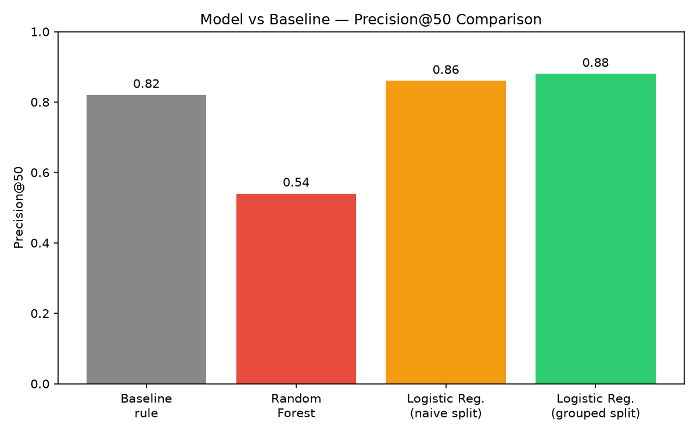

Five-sentence summary
Question: given limited reviewer time, which content pages should be looked at first for refresh, expansion, or protection? Method: a transparent baseline rule (built from a signal-tested combination of CTR-vs-position gap and demand) was compared against a Logistic Regression classifier trained on nine same-window observed signals, validated with a client-grouped train/test split to avoid client-level leakage. Result: the trained model showed a directional advantage over the baseline (Precision@50 of 0.88 vs. 0.82), while a more complex Random Forest model actually underperformed both (0.54) and was discarded rather than reported as a win. Limitation: the label used throughout is a same-window proxy for decline, not a verified future outcome, so this work measures "what a currently-declining page looks like," not "what will decline next month." Use: the validated model output was turned into a ranked action queue with reason codes, intended strictly as decision-support for a human reviewer — never as an automated fix pipeline.
Problem Statement
Content teams accumulate far more pages than any reviewer can manually re-check on a regular basis. In the working slice examined here, over half of all pages with real search demand (54.2%) were already trending down in visibility. Deciding which of these pages to look at first — and why — is a prioritization problem, not a guessing exercise.
This project treats that prioritization problem as a machine learning question: can a model, trained on observable search signals and validated honestly, produce a better ranking than a simple, explainable rule? The goal was never to build "magic SEO automation" — it was to test, with evidence at every step, whether the added complexity of a model earns its keep over a rule a human can read and trust.
(real demand only)
trending down
used
the dataset
Dataset, Scope, and Exclusions
The primary working dataset is the anonymized FlyRank ML Internship starter slice
(content_refresh_anonymized.csv) — roughly 30,000 pages carrying 90-day observed search
and engagement signals (impressions, clicks, position, CTR, engagement, age, freshness). This was filtered
to pages with impressions_90d ≥ 100 to keep real, measurable demand, leaving
22,006 pages used throughout modeling.
A second, larger exploration was run directly against the full FlyRank internship data warehouse release
via DuckDB — specifically the fact_content_daily_performance table for a mid-panel month
(month=2026-03), deliberately chosen over the most recent month, which is reserved as a sealed
test window. This slice contained 9,841,378 page-client-day rows. Its grain was verified
(no duplicate rows), its date span confirmed as a full, clean month, and its GA4 engagement-data
availability measured directly (only ~4.2% of rows carried GA4 data — most rows are search-only).
What was deliberately excluded, and why:
- The most recent month /
_sampletable — reserved as a sealed test window, since it is the natural "future" outcome window for any past→future label design. - Any FlyRank product-computed flags or scores (
health_score,priority_score,action_type) — these are rule outputs, not observed signals, and were never used as features or labels, to avoid a circular result. - Raw client names, URLs, titles, and queries — none appear anywhere in this analysis; only pseudonymized IDs and aggregate or derived metrics are used throughout.
Assumptions, Signals, and Validation Design
Task type. Classification, turned into a ranking (a top-K review queue). The model outputs a probability that a page belongs to a "needs review" class; that probability orders the queue.
Label. is_declining_label = (trend_direction == "down") — a
same-window proxy for decline, not a verified future outcome. This limitation is carried through every
later stage and is named explicitly in the Limitations section below.
Features (9 total). avg_position, ctr,
impressions_90d, sessions_90d, word_count,
content_age_days, days_since_last_update, search_volume,
competition — all observed, same-window signals; none derived from the label.
Signal audit — tested before being trusted. Two candidate signals were checked directly against the data before any rule was built on them:
| Signal | Verdict | Finding |
|---|---|---|
Staleness (days_since_last_update) |
MIXED | Decline rate did not climb cleanly with staleness — "aging" pages (90–180d) declined more than "stale" pages (180–365d) |
| CTR vs. position | CONFIRMED | CTR dropped cleanly and consistently as position worsened (2.71% → 0.65% → 0.32% → 0.21% across position tiers) |
Because staleness came back MIXED, it was not used as a standalone rule input — a clearly explained negative result changed the design rather than being ignored.
Baseline. A transparent, hand-written rule combining the confirmed CTR-gap signal with demand (impressions), scoring Precision@50 = 0.82 on a held-out test set.
Model. Logistic Regression was compared against Random Forest. Random Forest underperformed (0.54) and was reported honestly rather than discarded quietly — complexity was not rewarded for its own sake. Logistic Regression reached Precision@50 = 0.88.
Validation design. A client-grouped 80/20 train/test split (not row-level) was used, with zero client overlap verified between train and test. Pages from the same client can share patterns that a row-level split would let the model partially memorize, so this was chosen as the more defensible design for the real-world question of scoring pages across clients — including ones outside the training set.
Leakage checks. A deliberate leakage demonstration was run: adding a feature built directly from the label caused the score to jump to 0.998 — an unmistakable red flag. After removing it, the honest score returned to a believable 0.813. The final nine-feature set was independently correlation-checked against the label; all correlations were moderate (highest magnitude: −0.206), consistent with no leakage.
Model vs. Baseline, Same Split, Same Metric
| Method | Precision@50 | Split design |
|---|---|---|
| Baseline rule | 0.82 | Client-grouped |
| Random Forest | 0.54 | Client-grouped |
| Logistic Regression (naive random split) | 0.86 | Row-level random |
| Logistic Regression (client-grouped split) | 0.88 | Client-grouped |

Logistic Regression shows a directional advantage over the baseline (0.88 vs. 0.82) on the client-grouped split — the validation design chosen as most defensible for this question. Switching from a naive random split to the honest client-grouped split changed the score only slightly (0.86 → 0.88), suggesting limited but present sensitivity to split design at this dataset's scale (30 total clients, 6 held out for testing).
What the model leans on (Logistic Regression coefficients, strongest first):
content_age_days (−0.357), ctr (−0.324), and
avg_position (−0.314) — all same-window observed signals, none derived from the label.
What This Work Cannot Claim
- Same-window label, not a future outcome. The label is calculated from the same window as the features. This measures "which pages currently look like they're declining," not "which pages will decline next month." A genuine forward-looking model would need a prior-window → future-window label design, which was not built here.
- Not causal. Nothing here shows that refreshing a flagged page causes recovery. That would require an experiment or causal design that this observational data cannot provide.
- Small client count. Only 30 clients total, 6 in the held-out test set — the observed split-design sensitivity (0.86 vs. 0.88) suggests results could shift with a different random split.
- GA4 sparsity. In the full warehouse slice, only ~4.2% of daily rows carried GA4 engagement data — any engagement-based feature would apply to a small minority of rows at that scale.
- Cannot claim: Google algorithm factors, AI citations or rankings, or any causal SEO effect. Every claim here is observed, directional, and decision-support — never proof.
The Action Playbook
The validated model was used to score all 22,006 pages and assign one of five reason codes, each mapped to a specific reviewer action:
| Reason code | Count | Action |
|---|---|---|
stale_high_risk | 20 | Refresh content |
model_decline_risk | 6,232 | Review content |
ctr_below_position_expectation | 5,832 | Review metadata |
moderate_risk_monitor | 5,908 | Monitor |
healthy_no_action | 4,014 | No action |
Intended use. Prioritization for a human reviewer with limited weekly capacity — never an automated fix pipeline. Every row is a candidate for review, not a confirmed problem.
model_score to clients as a
guarantee of future performance; bulk-acting on the 20-page stale_high_risk bucket without
individual human review.
Monitoring triggers. A sharp shift in the model_decline_risk share of the
portfolio, a change in reason-code balance, or a new client with under 90 days of history should each
trigger a re-validation pass before the queue is trusted again. Given this model was trained on a static
slice, a monthly retrain with a fresh Precision@50 spot-check is recommended at minimum.
Notebooks and Repository
Every claim in this paper traces back to an executed, committed notebook in the project repository:
w01_research_question.ipynblane choice and framingw02_ml_task_framing.ipynbML task type, target, metricw03_data_contract.ipynbdata contract, grain and availability queries, leakage demow04_baseline_score.ipynbsignal audit and baseline rulew05_model.ipynbmodel training and baseline comparisonw06_validation_audit.ipynbhonest-split audit and claim rewritew07_action_playbook.ipynbfinal scoring and action playbook exportcapstone.ipynbthe consolidated summary this paper is built from